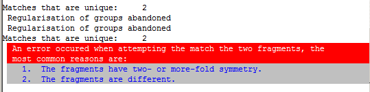
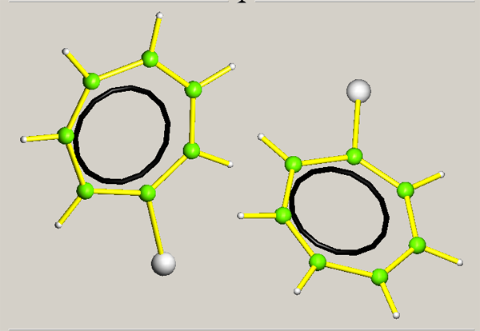
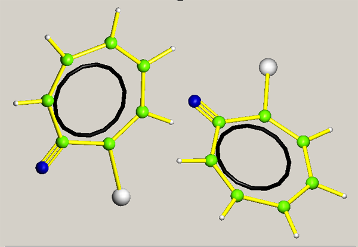

Breaking Symmetry
If the molecules being compared have internal topographic symmetry (i.e.
symmetry of connectivity) the MATCH routine may be unable to choose which of
the alternative paths through the molecules to take.

You can try breaking the symmetry by changing the TYPE of one or more
equivalent atoms in both molecules.

|
Start by retaining the current atom list (LIST 5):
#DISK
RETAIN 5
END
make a note of the current version of LIST 5.
Use the GUI to change the type of two equivalent atoms (in this case hydrogen to
nitrogen).
Use the GUI to compare the modified molecules. If the algorithm fails again, try
degrading the symmetry further by changing another pair of atoms.  If the
match is successful and a pseudo-symmetry operator exists, it will be given in
the listing file:
Trace = 1.000 Determinant =-1.000 Tr+Det =-0.000
see Giacovazzo, Sect 1.D
Element: 1 2 3 4 6 -1 -2 -3 -4 -6
Tr_det: 4 0 1 2 3 -4 0 -1 -2 -3
Pseudo-symmetry element m detected
Pseudo-symmetry operator of form :- 0.50+X 1.50-Y 0.50+Z
Restore the proper atom list:
#DISK
RESET 5 n
END
where 'n', the version number, was noted earlier.
|